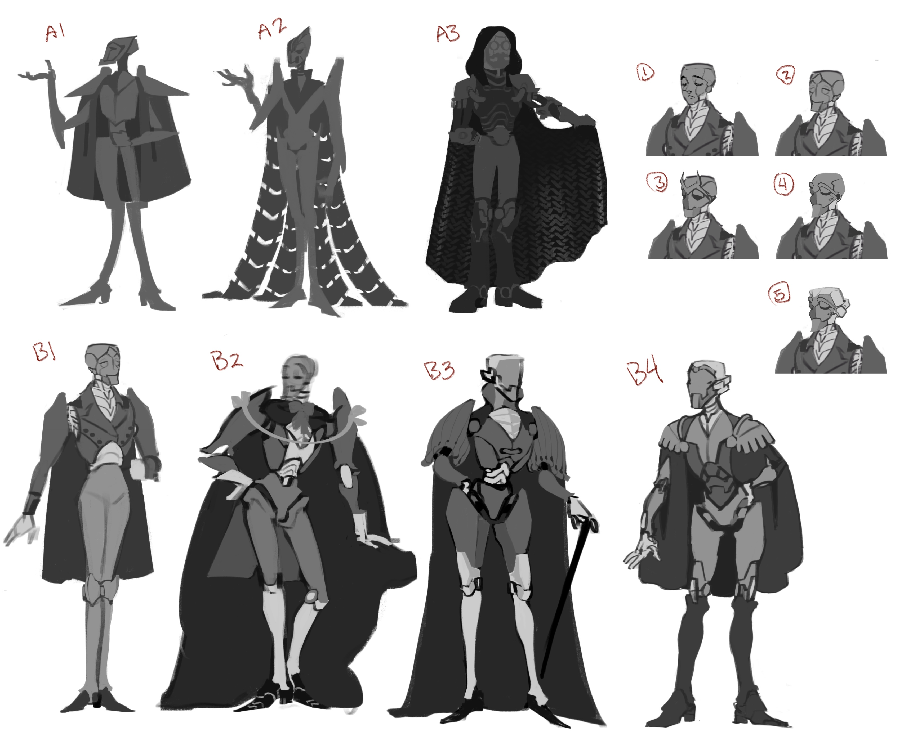
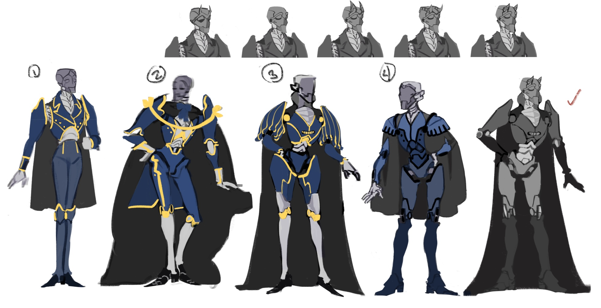
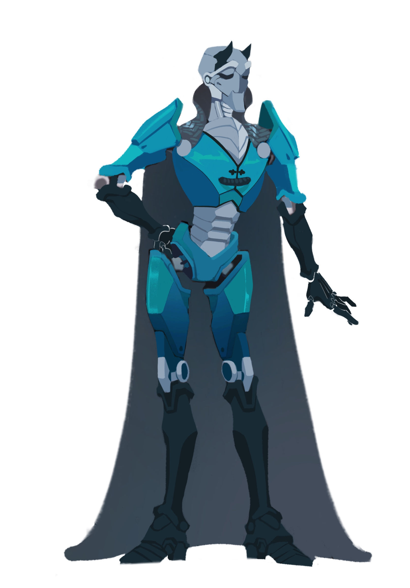
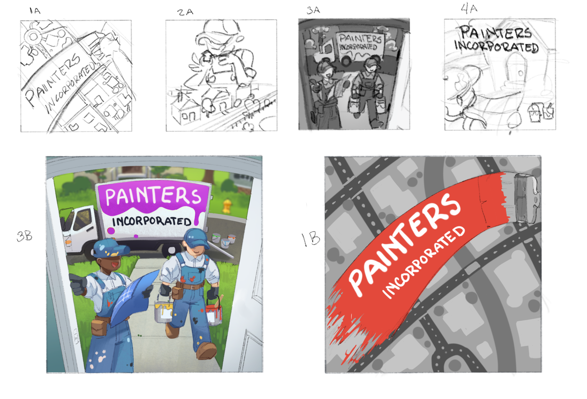

projects
Discover the diverse digital art portfolio of Rachel Zuehlke, featuring commissioned work in multiple mediums. From school mascots to board game illustrations, Rachel's captivating designs inspire. With a talent for graphic art, her beer can designs stand out on the shelves. Her unparalleled ability to bring a client's vision to life is recognized for its attention to detail, bold lines, and striking colors.

Rachel’s monster concept art begins with a basic form, which she then adds poses and different angles to bring her creations to life. Starting with a simple silhouette or shape, she begins to explore the character's anatomy, adding depth and dimension through different perspectives and angles.

This piece showcases a dynamic female character in a range of poses and expressions, all in a monotone color scheme. This is just the starting point for Rachel's art, however; she uses this as a foundation to add additional layers, bringing the character and her world to life in a way that is both captivating and imaginative.
Example of Rachel's project from start to finish...
Her projects begins with brainstorming and conceptualization, using various methods to develop ideas and inspiration. The production phase involves creating the artwork using digital tools and software, experimenting with different techniques and styles. The post-production phase refines and polishes the artwork, adjusting colors, lighting, composition, and other elements to create the final piece.

In this stage, she sketches out the general body, clothing, and facial features of the character using traditional or digital tools, experimenting with different shapes, textures, and colors until she arrives at a concept she is happy with.

In the second stage, she produces artwork using digital tools and software, adding more details and experimenting with different techniques and styles. From these variations, she selects the one that she likes the most to move on to the final stage.

In the final stage, she refines and polishes the artwork by adjusting colors, lighting, composition, and other elements to create the final piece. Overall, the artist demonstrates her creative process and technical proficiency in bringing her ideas to fruition.
some of Rachel's other commisioned projects...
The commissioned art projects included creating a logo for a college gaming club, designing a board game, and creating a beer bottle label.
For the college gaming club logo, the artist worked closely with the club members to understand their vision and preferences and created two variations of the logo. After feedback and revisions, the final design was chosen and refined to create a clean and professional logo that reflected the club's identity.
Here is the second variation of the logo.

For the board game, the artist worked on the illustrations and designs, using creativity and attention to detail to ensure a fun and engaging experience for players.